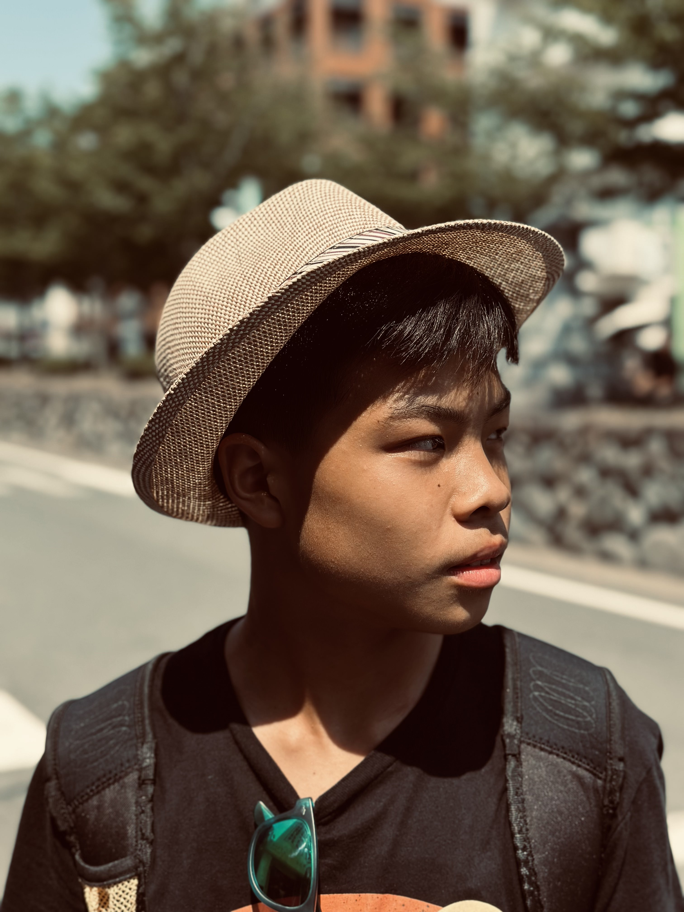

At KCC (Knights Conquering Cancer), our mission is clear and passionate: we strive to raise as much money as possible to donate to the American Cancer Society (ACS). We are a team of eleven dedicated students from Bergen County Academies (BCA) in New Jersey, united by a common goal to fight cancer. Many of us are involved in advanced cell biology research, focusing on cancer-related projects. This academic background illustrates our commitment and equips us with the knowledge to approach our mission with scientific rigor and valuable insight.
Our team is organized into various “departments,” such as communications, advertising, and social media. We aim to officially establish the KCC as a recognized club within BCA, expanding our impact and spreading awareness for this devastating disease. Donate today. Do your part to fight cancer.

Elizabeth An
President
Hi everyone! My name is Elizabeth An and I am a freshman in the Academy for Medical Science and Technology at Bergen County Academies. I am so excited to be the President of Knights Conquering Cancer and a member of the Advertising Committee. As a family member of a cancer survivor, my interest in science and medicine was sparked to learn about preventive cancer medicines and the future cancer treatment regimen, and also join a cancer research program. Other than research, I enjoy drawing, sewing, reading, listening to music, and spending time with my friends.

Lana Mehetarian
Vice President
Hi everyone!
My name is Lana Mehetarian, and I am a freshman in the Academy for Medical Science Technology here at BCA. I am beyond honored to serve as the vice president on the BCA’s fundraising team for the American Cancer Society, Knights Conquering Cancer! I hope that through our work, we are able to raise more awareness about the topic of cancer, and get more people involved in raising money for this significant cause! Every donation counts, so make yours today! Outside of fundraising and school, I love to dance, volunteer, and spend time with my friends.
Rachel Lee
Secretary
Hi everyone! My name is Rachel, and I'm a freshman in the Academy for Medical Science Technology at BCA. Having witnessed the struggles of loved ones facing this disease, I’m very eager to join forces with my friends in the battle against cancer and determined to make a meaningful contribution. I can’t wait to see where this journey takes us! Outside of school, I love to crochet, dance, and babysit children.

Leo Toake
Head of Research, HR
Hello! I'm Leo Toake, a freshman in the Academy of Medical Science Technology at the Bergen County Academies. I've enjoyed conducting biomedical research at school, so I'm very excited to be the Director of Research on our American Cancer Society team. My passion for cancer awareness started in middle school, where I innovated a cutting-edge stationary bike-stand for an immuno-compromised 4-year-old named Cole. Sadly, Cole is no longer with us anymore, but I found happiness in impacting his battle with cancer and his story continues to inspire my work in cancer advocacy today. Outside of school, my hobbies include soccer, piano, and biology/medical competitions.
Reece Sit
Treasurer, Handyman, HR
Hi everyone!
My name is Reece Sit and I am a freshman at the Academy of Medical Science and Technology at BCA. I am so excited to be the treasurer and to be actively involved in various aspects of Knights Conquering Cancer. As a family member of countless cancer survivors, my passion for supporting those affected by cancer was sparked, and I am currently learning more about preventive cancer medicines and have joined a cancer research program. Aside from my academics, I enjoy biking, playing the piano, swimming, reading, and spending time with my friends.
Lina Simonyan
Head of Advertising, Social Media
Hi everyone, My name is Lina and I am a freshman at the Academy of Advancements of Science and Technology at Bergen County Academies.
I am so thankful and excited to be able to participate in the Knights Conquering Cancer organization and to help as the head of advertisement. Cancer has affected many of my close friends and family and being able to help contribute to finding a cure is such a great honor for me.
Outside of academics, I enjoy dancing, playing basketball and volleyball, playing the piano, reading, volunteering, and spending time with those close to me! I am beyond grateful for this opportunity and hopefully through our works we can spread more awareness about cancer and help further its research.
Jerri Markose
Video Editor
Hello! I'm Jerri Markose, and I'm thrilled to be part of the BCA ACS team this year. As video editor and part of the advertising group, I look forward to making some compelling content across different medias, such as fliers, videos, and posts to help achieve our donation goal to conquer cancer! Outside of ACS, I enjoy playing badminton, lifting weights, volunteering at my church, and participating in STEM competitions. I hope ACS will make great progress this year, and look forward to working with the team!
Aidan Kim
Head of Marketing
Hello everyone! My name is Aidan Kim, and I am a freshman in the Business and Finance academy of BCA. Unfortunately, cancer is becoming more and more of a prevalent issue today. That is why I plan to support the compassionate, hardworking scientists that are tirelessly working on a cure for cancer. I am privileged with the opportunity to be a part of Knights Conquering Cancer. A little bit more about me is that I am an avid runner, I like playing sports and keeping fit, I watch movies and listen to lots of music, and I love hanging out with friends and family.

Kunj Parikh
Head Webmaster
Hello everyone! My name is Kunj Parikh and I am a freshman in the ATCS (Academy of
Technology and Computer Science) at BCA. As the webmaster for our fundraising group, I am
passionate about both technology and fighting against cancer

Bozhan Shang
Webmaster
Hey! I'm Bozhan Shang, class of '27 in the Academy for Technology and Computer Science at
Bergen County Academies. Although I mostly study CS, I'm also really passionate about medical science and
mathematics. I enjoy playing piano, basketball, and volleyball in my free time. Feel free to email me at bozhan.harry@gmail.com anytime if you're up for a chat :D

Ashley Park
External Communications
Hello! I am Ashley Park, a freshman in the Academy of Medical Sciences and Technology at BCA. I am really excited to raise money to support the American Cancer Society, as it aligns with my academic passion. Outside of fundraising and learning, I love to dance, read, and spend time with friends and family!

Clara Sullivan
Event Coordinator
Hi! I'm Clara and I'm a freshman in AMST. Some of my hobbies include playing volleyball and the piano. I'm an event coordinator on Knights Conquering Cancer and the back up note-taker when Rachel's out. I hope that we can support all people affected by cancer!

Vedanti Rawal
Treasurer
What's up guys! I'm Vedanti, a Frehman in Bergen County Academies. I'm in the Academy for the Advancement of Science and Technology and I am so grateful for this opportunity to better the lives of cancer patients through Knights Conquering Cancer. In my free time I love making jewelry, volunteering, practicing taekwondo, and painting. I also occasionally play volleyball and my favorite place to be in is the beach. Thanks for reading!
.png)